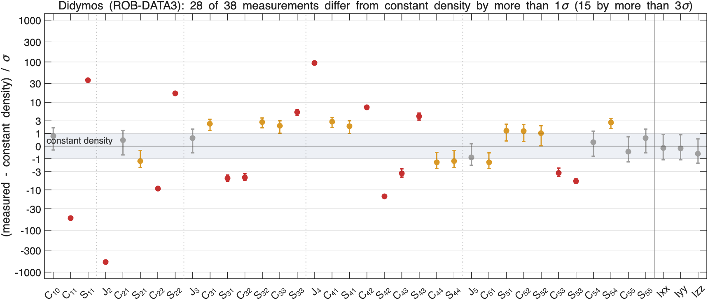
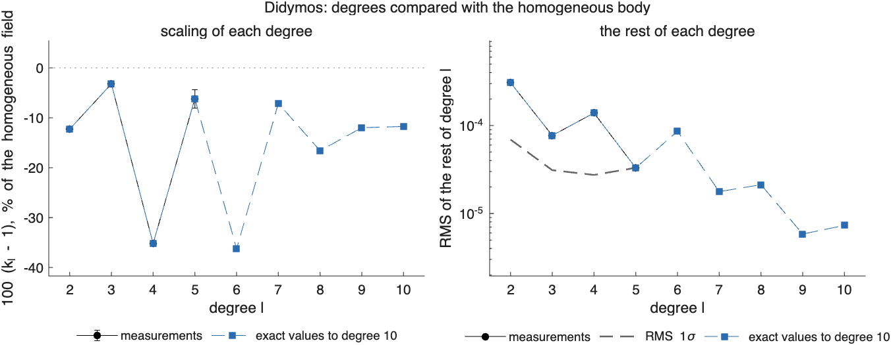
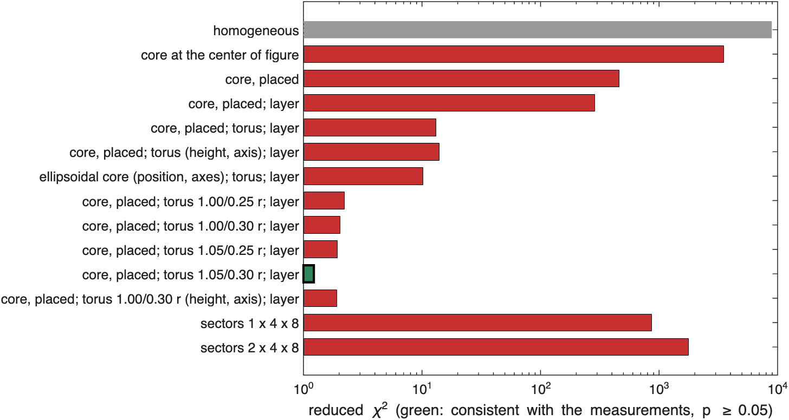
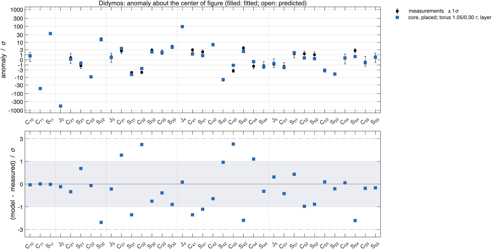
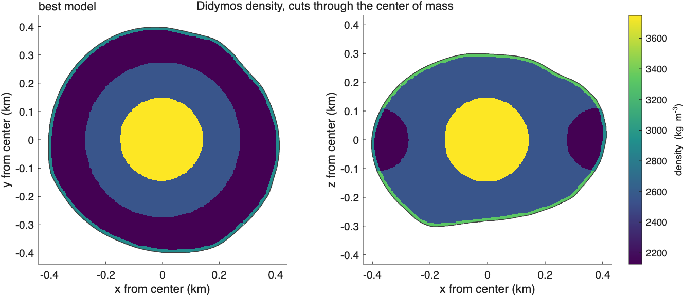
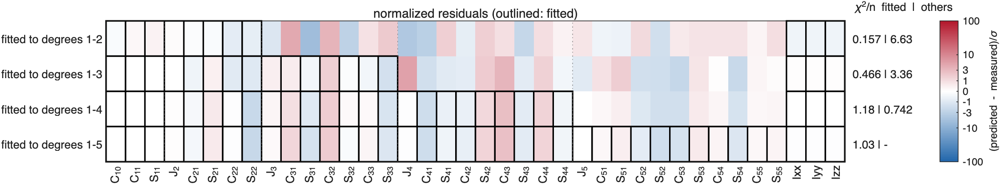
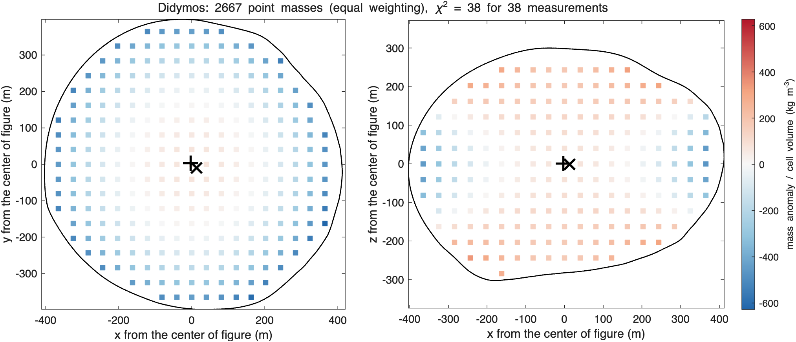

ROB-DATA3: Didymos#
Last edited October 27, 2026
Result. A dense core near the center of figure inside a thick, light equatorial torus explains every coefficient to degree 5 and the inertia: reduced 1.22 (). The core is 1200 ± 100 kg/m³ denser than the background and within 5 m of the center of figure; the torus, 383 m in radius and 110 m thick, is 425 ± 7 kg/m³ lighter. The same model, fitted to degrees 1–4, predicts degree 5, and it reproduces most of the anomaly of the exact values up to degree 7. Sector grids, which assume no structure, cannot fit this package at all. The package's mass is that of 2600 kg/m³.
Reading#

Didymos (ROB-DATA3): anomaly about the center of figure, degrees 1 to 5
center of mass - center of figure: [-0.45 0.33 0.07] m +- [0.01 0.01 0.10] m, |offset| 0.56 m
chi-square of the offset: 3870 for 3 degrees of freedom
degree RMS anomaly RMS 1-sigma ratio k_l +- 1-sigma residual chi2 / dof
1 4.571e-04 8.022e-05
2 2.243e-03 6.924e-05 0.87722 +- 0.00047 353.5 / 4
3 9.592e-05 3.108e-05 0.96800 +- 0.00591 69.96 / 6
4 6.303e-04 2.744e-05 0.64823 +- 0.00379 544.3 / 8
5 4.339e-05 3.308e-05 0.93834 +- 0.01865 47.29 / 10
one compact mass with the same degrees 1 and 2: 12.289% +- 0.047% of the mass (6.51e+10 kg) at [-3.6 2.7 0.6] m +- [0.1 0.1 0.8] m from the center of figure- The center of mass is 0.56 m from the center of figure, mostly along −x and +y: something is slightly off center, but much less than in ROB-DATA2.
- Degree 2 is scaled down by 12.3% and degree 4 by 35%, degrees 3 and 5 by 3–6%: a large central condensation, with the even degrees reduced much more than the odd ones. A central mass alone would scale every degree alike; the even–odd alternation is the signature of a ring about the -axis (What each kind of structure does).
- The rest of degree 4 ( 544 for 8 degrees of freedom) is mostly , the rest of degree 2 mostly .
- One compact mass would hold 12.3% of the mass, 5 m from the center of figure. That is the net condensation of a dense core and a light outer ring together, so the core's own mass is smaller.

Models#

model chi2/nu p params components (relative density +- 1 sigma, kg/m^3; centers from the center of figure, m)
homogeneous 8.93e+03 0 0.0 background 2601
core at the center of figure 3.51e+03 0 1.0 background 2471 | core +2029 +- 9 at [0 0 0]
core, placed 462 0 4.0 background 2471 | core +2029 +- 33 at [-9 6 147]
core, placed; layer 285 0 5.0 background 2723 | core +1777 +- 67 at [-11 8 128] | regolith -2723 +- 119
core, placed; torus; layer 13.1 9.4e-69 6.0 background 2640 | core +1601 +- 102 at [-12 9 1] | torus -659 +- 11 at [0 0 0] | regolith -888 +- 239
core, placed; torus (height, axis); layer 14 4.6e-68 9.0 background 2637 | core +1602 +- 103 at [-12 9 3] | torus -664 +- 11 at [0 0 2] | regolith -846 +- 244
ellipsoidal core (position, axes); torus; layer 10.2 7.3e-46 9.0 background 2712 | core +1356 +- 122 at [-15 11 8] | torus -720 +- 14 at [0 0 0] | regolith -1452 +- 202
core, placed; torus 1.00/0.25 r; layer 2.21 9.7e-05 6.0 background 2531 | core +1452 +- 104 at [-5 3 1] | torus -441 +- 7 at [0 0 0] | regolith +745 +- 252
core, placed; torus 1.00/0.30 r; layer 2.03 0.00053 6.0 background 2639 | core +840 +- 104 at [-8 5 1] | torus -397 +- 6 at [0 0 0] | regolith +122 +- 246
core, placed; torus 1.05/0.25 r; layer 1.93 0.0012 6.0 background 2443 | core +1806 +- 104 at [-3 2 1] | torus -485 +- 8 at [0 0 0] | regolith +1430 +- 258
core, placed; torus 1.05/0.30 r; layer 1.22 0.18 6.0 background 2552 | core +1197 +- 104 at [-4 3 1] | torus -425 +- 7 at [0 0 0] | regolith +778 +- 252
core, placed; torus 1.00/0.30 r (height, axis); layer 1.91 0.0023 9.0 background 2632 | core +846 +- 105 at [-8 5 2] | torus -399 +- 7 at [0 0 0] | regolith +205 +- 253
sectors 1 x 4 x 8 862 0 30.9 background 2601 | s111 +228 +- 4752 | s112 +646 +- 5659 | s113 -118 +- 4320 | s114 +1899 +- 2895 | s115 -1721 +- 3306 | s116 +1899 +- 4150 | s117 -331 +- 4960 | s118 +823 +- 4917 | s121 -115 +- 364 | s122 -47 +- 320 | s123 -160 +- 152 | s124 -153 +- 157 | s125 -68 +- 144 | s126 -147 +- 215 | s127 -83 +- 350 | s128 -82 +- 432 | s131 -52 +- 442 | s132 -108 +- 318 | s133 -51 +- 176 | s134 -143 +- 164 | s135 -66 +- 157 | s136 -33 +- 200 | s137 -100 +- 364 | s138 -141 +- 474 | s141 -1297 +- 6697 | s142 +1899 +- 5328 | s143 -1202 +- 4166 | s144 +1899 +- 3488 | s145 -589 +- 3186 | s146 +1105 +- 3781 | s147 -634 +- 5629 | s148 +1707 +- 6924
sectors 2 x 4 x 8 1.76e+03 0 35.8 background 2601 | s111 +1899 +- 80007 | s112 +1899 +- 80974 | s113 +1899 +- 81146 | s114 +1899 +- 81003 | s115 +1899 +- 81299 | s116 +1899 +- 81160 | s117 +1899 +- 80446 | s118 +1899 +- 79895 | s121 +1899 +- 53636 | s122 +1899 +- 65945 | s123 +1899 +- 56106 | s124 +1899 +- 62793 | s125 +1899 +- 62433 | s126 +1899 +- 64224 | s127 +1899 +- 63392 | s128 +1899 +- 70859 | s131 +1899 +- 67700 | s132 +1899 +- 68343 | s133 +1899 +- 61781 | s134 +1899 +- 58803 | s135 +1899 +- 58661 | s136 +1899 +- 65324 | s137 +1899 +- 64126 | s138 +1899 +- 64297 | s141 +1899 +- 81520 | s142 +1899 +- 81513 | s143 +1899 +- 81520 | s144 +1899 +- 81414 | s145 +1899 +- 81366 | s146 +1899 +- 81438 | s147 +1899 +- 81463 | s148 +1899 +- 81513 | s211 -546 +- 27636 | s212 +787 +- 32855 | s213 -1904 +- 29781 | s214 +1899 +- 27456 | s215 -2601 +- 28272 | s216 +1337 +- 22712 | s217 -902 +- 27733 | s218 +728 +- 28178 | s221 -292 +- 2470 | s222 -332 +- 1847 | s223 -286 +- 1585 | s224 -351 +- 1680 | s225 -310 +- 2102 | s226 -342 +- 1689 | s227 -299 +- 1882 | s228 -292 +- 2864 | s231 -279 +- 2424 | s232 -328 +- 2237 | s233 -295 +- 1511 | s234 -322 +- 1571 | s235 -253 +- 2084 | s236 -306 +- 1349 | s237 -278 +- 2219 | s238 -381 +- 2838 | s241 -2170 +- 34868 | s242 +1816 +- 29646 | s243 -2256 +- 33543 | s244 +1899 +- 37166 | s245 -2082 +- 30748 | s246 +1731 +- 23645 | s247 -1992 +- 27677 | s248 +1899 +- 35454
best: core, placed; torus 1.05/0.30 r; layerWhat works and what does not:
- A core alone cannot: at the center of figure it leaves a reduced of 3500, and placed freely it runs to 147 m above the center to reduce instead of .
- A core and a torus of the default size (radii 0.95 and 0.15 of the mean radius, 346 and 55 m) reach 13: the torus is needed, and its density, −660 kg/m³, is well determined, but its size is not right. Freeing its height and axis does not help (14): the torus is level and centered.
- The torus size decides the fit. A search over the ring radius and the tube radius (0.80 to 1.10 and 0.10 to 0.30 of the mean radius) found the best at a ring radius of 1.05 and a tube radius of 0.30 of the mean radius: 383 m and 110 m, a torus that fills the equatorial region out to the surface. With it the reduced is 1.22.
- The core's density depends on the torus size: +1450 kg/m³ with a 92 m tube, +1200 with 110 m, +840 with the 110 m tube at 365 m. The core and the torus share the central condensation; its total is fixed, the split is not.
- The layer is not determined: −900 to +1400 kg/m³ across the models, with 1σ of about 250 kg/m³.
- Sector grids of one or two shells, 4 latitude and 8 longitude bands, cannot fit (reduced 860 and 1760): a dense core inside a light ring needs more radial resolution than two shells.


How far the model reaches#
The best model fitted to degrees 1–, predicting the rest; and the fraction of each degree's anomaly in the exact values to degree 10 that the model reproduces, (1: all of it; 0: no better than the homogeneous body; negative: worse).
fitted to chi2/nu chi2/n fitted chi2/n others
degrees 1-2 0.344 0.157 6.63
degrees 1-3 0.699 0.466 3.36
degrees 1-4 1.51 1.18 0.742
degrees 1-5 1.22 1.03 -
Fraction of each degree's anomaly (exact values) reproduced, 1 - |model - given|^2/|given|^2:
fitted to 1 2 3 4 5 6 7 8 9 10
degrees 1-2 1.00 1.00 0.04 0.99 0.71 0.83 0.51 -1.19 -0.20 -4.81
degrees 1-3 1.00 1.00 0.92 0.99 0.58 0.94 0.25 -0.59 0.14 -4.70
degrees 1-4 1.00 1.00 0.92 1.00 0.80 0.90 0.61 -0.88 0.49 -4.73
degrees 1-5 1.00 1.00 0.91 1.00 0.85 0.90 0.70 -0.83 0.55 -4.57

- Fitted to degrees 1–2 only, the model misses degree 3 and predicts the others with a of 6.6 per coefficient; fitted to 1–3, 3.4; fitted to 1–4, it predicts degree 5 with 0.74 per coefficient.
- Beyond the radio-science degrees it reproduces 90% of degree 6 and 70% of degree 7, then fails at degree 8 (−0.8) and 10: the structure at those scales is not a core and a torus. The model is good to degree 7; truncate at 7 if the coefficients were measured that far.
Point masses#


equal weighting: 2667 points every 40.6 m, lambda 1.29e-08, chi2 38 for 38 measurements; positive 1.42e+10 kg at [-3 3 1] m, negative -1.42e+10 kg at [14 -10 -2] m
sensitivity weighting: 2667 points every 40.6 m, lambda 0.42, chi2 38 for 38 measurements; positive 1.87e+10 kg at [-4 3 1] m, negative -1.87e+10 kg at [8 -7 -2] mWithout any assumed structure the point masses put a dense concentration at the center (+1200 kg/m³ in the inner fifth of the radius, with sensitivity weighting) and lighter material outside (−300 kg/m³ near the surface), with the centroids of both parts within 20 m of the center of figure. That is the core and the light outer region of the parametric model, without its ring: point masses fitted to 38 numbers spread the anomaly smoothly and cannot form a torus.